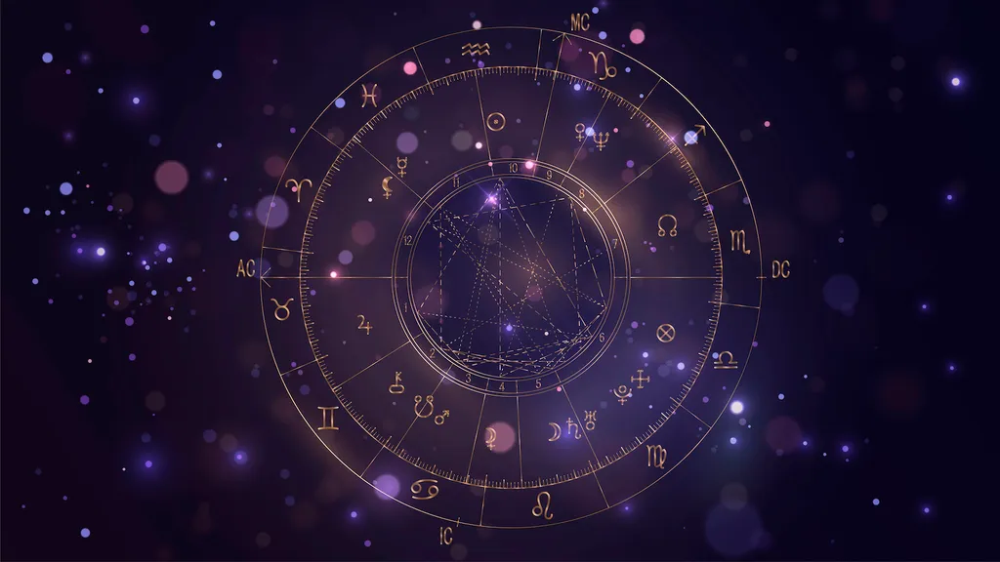

Everything About Astrology
ASTROLOGY KNOWLEDGE BASE INDEX
In order to sense the atmosphere of certain positions, aspects, strong points and challenges of any
chart,
you need to learn about basic principles of Astrology. These pages will provide you with such
information,
while also pointing out the historical and scientific impact Astrology has had over the ages.
Astrology is the language of symbols,
and as such stands for something older than any written word. With its scope, branches,
and impeccable timing, this is a (pseudo)science filled with incredible possibilities that will lead
you towards self-recognition
and unstoppable curious research.
If you are new to Astrology and wish to learn, the first thing you need to do is meet all of the
natural elements and qualities,
take a look at your personal chart, and recognize planets, signs and houses that tell your story.
When you are acquainted with the basics and your own personality shown through symbolism, don’t
forget to let Astrology introduce itself to you too.
Information about its actual place in history and the world as we know it will set you free from
typical misconceptions that obstruct its growth and
development beyond boundaries of the collective unconscious. Once you discover the amazing world
that hides behind the symbolism,
it will be impossible to ever stop learning

Zodiac signs
The Horoscope
The astrologer can enhance the information and forecasts. He or she can calculate the movement of planets inside a period of time and use this information to make predictions such as: the best time to move, when to return to school, or when changing careers. The predictions are based on daily charts. Each sign is placed in a specific house in the charter. Then the position of each planet is calculated and the planet is placed in the proper home. Then, the astrologer can predict the impact of the movement of the planet on each sign. Personalized reading based on the charter of each person would be more specific, but daily horoscopes give a good general indication. The weekly and monthly preaching are also calculated in the same way.